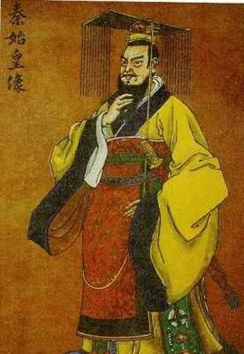

秦始皇个人简介
秦始皇（前259年—前210年），嬴姓，赵氏，名政。秦庄襄王之子。出生于赵国都城邯郸，十三岁继承王位，三十九岁称皇帝，在位三十七年。中国历史上著名的政治家、战略家、改革家，首位完成华夏大一统的铁腕政治人物。建立首个多民族的中央集权国家，曾采用三皇之“皇”、五帝之“帝”构成“皇帝”的称号，是古今中外第一个称皇帝的封建王朝君主。 秦始皇在中央创建皇帝制度，实行三公九卿，管理国家大事。地方上废除分封制，代以郡县制，同时书同文，车同轨，统一度量衡。对外北击匈奴，南征百越，修筑万里长城，修筑灵渠，沟通水系。还把中国推向大一统时代，为建立专制主义中央集权制度开创新局面。对中国和世界历史产生深远影响，奠定中国两千余年政治制度基本格局，他被明代思想家李贽誉为“千古一帝”。
